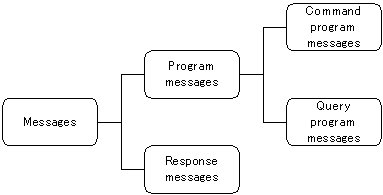
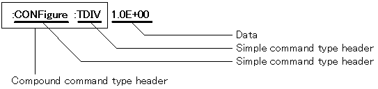
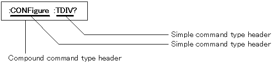
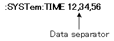

|
What is a Command? |
|
Command Messages |
Commands, queries and responses sent and received through the interface are called messages.
Message types are as follows:

|
|
|
|
|
|
|
|
|
|
|
|
In the following descriptions the word "command" refers to both command and query program messages, except where an ambiguity may result. (Control commands : HIOKI unique SCPI)
|
Command Syntax |
Commands sent to the instrument are not case sensitive.
Command names are intended to be mnemonic, and all have a long form
and an abbreviated short form.
In the command descriptions in this manual, the short form appears in upper-case letters,
and is continued in lower-case letters to show the long form as well.
While either form is valid during operation, intermediate forms are invalid.
Both lower- and upper-case letters are accepted without distinction during operation.
The instrument generates response messages in the long form (when headers are enabled), in all upper-case letters.
(Example)
|
Command descriptions |
Short form |
Long form |
|
DISPlay |
DISP |
DISPLAY |
For "DISPlay" commands, either "DISPLAY" (the long form) or "DISP" (the short form) is accepted.
However, all of "DISPLA", "DISPL" and "DIS" are invalid and will generate an error.
|
Command headers |
All commands must include a header for identification.
There are three kinds of headers (command types):
simple,
compound,
and
standard.
|
Command Type (Header) |
Description |
|
Simple |
|
|
Compound |
 |
|
Standard |
*RST |
|
Quey headers |
Queries interrogate the instrument regarding a setting state or the result of an operation.
Query headers are distinguished by a question mark at the end of the header.
The structure of a query header is identical to that of its corresponding command header,
with "?" always appended as the last character.
|
Command Type (Header) |
Description |
|
Simple |
|
|
Compound |
 |
|
Standard |
*IDN? |
|
Response Messages |
Response messages returned by the instrument to the PC in response to received queries are composed of a header portion
(omitted when headers are disabled) and a data portion identical to the data portion defined for the command message
that corresponds to the received query. As a general rule, the format of returned data is the same as that of the command message.
(Example)
|
|
|
|
|
|
|
|
(1) Message terminators
The terminator character signifies the end of a message
(including compound messages to be sent as one line),
and is not considered part of the message itself.
|
Setting on the instrument and PC |
ANSI code |
Meaning |
Description |
|
LF |
0Ah |
Line feed |
LF is the message delimiter |
|
CR+LF |
0Dh 0Ah |
|
CR+LF is the message delimiter |
(2) Message separator
When a compound message is to be sent to the instrument as one line, a semicolon ";" serves as the separator for individual messages.
(3) Header separator
Messages having both a header and data include a space character (" ") to separate the header from the data.
The space is not part of the actual command.
(4) Data separator
Messages containing multiple data items include commas to separate the data items from one another.

|
The Command Tree |
When writing multiple messages in compound command form on the same line, as a rule,
the header from one message is considered to carry forward to immediately following messages
that do not begin with a colon (following the semicolon message separator).
This construction corresponds to the general concept of the current directory
in the directory structure of UNIX or MS-DOS,
and the header that is carried forward is called the "current path".
(Example 1)
:CONF:TDIV 1.0E-3;:CONF:SHOT 15
(Example 2)
:CONF:TDIV 1.0E-3;SHOT 15
(Example 3)
:CONF:TDIV 1.0E-3
SHOT 15
Examples 1, 2 and 3 are commands to set time/division to 1 ms and recording length to 15 divisions.
In Example 1, because there is a colon directly after the semicolon, the current position is the "root".
The subsequent command is therefore referenced relative to the root.
On the other hand, Examples 2 and 3 take advantage of the fact that the first command (":CONF:TDIV 1.0E-3;") sets the current path to ":CONF",
so that the ":CONF:" before "SHOT" in the second command is omitted.
To reiterate, the colon at the beginning of a command forces command parsing to begin from the root.
|
Data formats |
The instrument recognizes the following data formats:
character data,
decimal numeric data
and
character string data.
[Character data]
The first character must be alphabetic.
Subsequent characters may only be alphabetic characters, numerals or underline characters (_).
The instrument accepts both upper- and lower-case character data, but returns only upper-case characters.
(Example)
:HEADER ON
[Decimal data]
Decimal data values are represented in what is termed NR formats.
The three types of NRf formats are called NR1, NR2 and NR3, each of which may be signed or unsigned numbers.
Unsigned numbers are considered positive.
Numerical values with accuracy exceeding the range with which the instrument can deal are rounded (digits 5 and above are rounded up, and 4 and below are rounded down).
The term "NRf format" includes all three formats. Though the instrument can accept any NRf format, it only returns data in the format (NR1 to NR3) defined for the corresponding command.
|
NRf format |
Data Type |
Example |
|
NR1 |
Integer data |
+15,-20, 25 |
|
NR2 |
Fixed-point numbers |
+1.23,-4.57, 7.89 |
|
NR3 |
Floating-point numbers |
+10.0E-3,-2.3E+3, 5E3 |
(Example 1) NR1 format
:TRIGger:PRETrig 10
(Example 2) NR2 format
:TRIGger:FILTer CH1_1,0.1
(Example 3) NR3 format
:TRIGger:UPPEr CH1_1,+1.0E-3
[Character string data]
Character string data is enclosed within quotation marks.
The data consists of 8-bit ASCII characters.
Characters which cannot be handled by the instrument are replaced by spaces.
Although the instrument sends only double quotation marks (") to the PC, it accepts both double and single quotation marks (').
(Example)
:COMMent:TITLe:COMMent,'HIOKI'
:COMMent:TITLe:COMMent,"HIOKI"